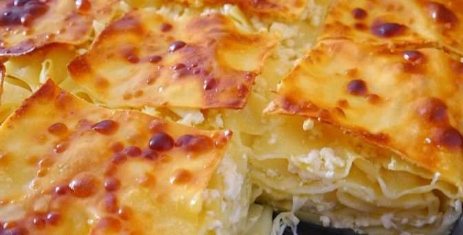

p>აჭარული ხაჭაპურის სახელით ცნობილი ხაჭაპურის სახეობა არ აქვს ნახსენები თედო სახოკიას, რომელმაც აჭარაში იმოგზაურა 1897 წელს და აღწერა აჭარული სამზარეულო. აჭარული ხაჭაპური ფორმით წააგავს ლაზეთის ტრადიციულ საკვებს. ერთ-ერთი ვერსიით ნავის ფორმის ხაჭაპური ლაზმა მეთევზე ალი კაბარიამ გამოიგონა,რომელმაც მას „ერბოიანი ხაჭაპური“ უწოდა.[1]

დააკლიკეთ აქ